Cos'è una query?
Una query (dall'inglese: interrogazione) è una domanda che facciamo al database. Il database risponde mostrando una tabella con i dati che soddisfano i nostri criteri.
// Una query può:
- Scegliere quali campi mostrare (es. solo nome e prezzo, non tutto)
- Scegliere quali righe mostrare (es. solo i prodotti sotto i 10€)
- Combinare dati da più tabelle collegate
- Ordinare i risultati (es. dal più economico al più caro)
- Raggruppare e calcolare medie, somme, conteggi
Il database NERD-HERD
Gli esempi di questa guida usano il database di un negozio multisettore. Ecco la struttura delle tabelle principali che useremo:
🔑 = chiave primaria · n—1 = relazione molti-a-uno
Aprire il Query Designer
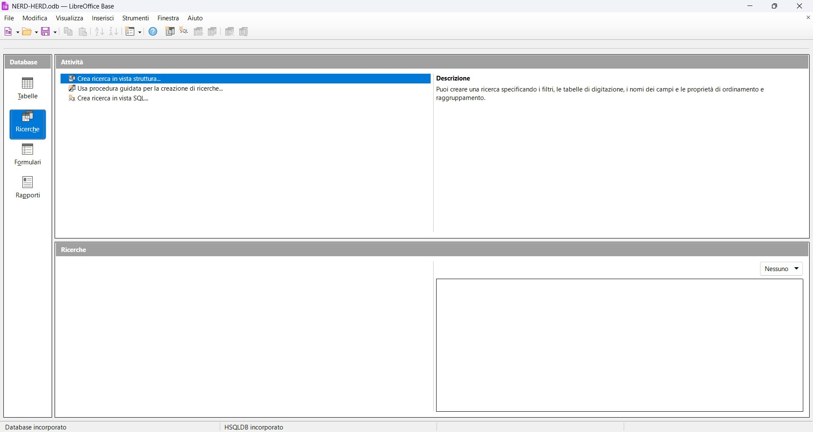
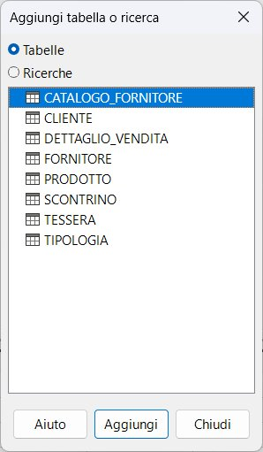
L'interfaccia del Query Designer
Il Query Designer è diviso in tre zone. Impariamo a riconoscerle prima di procedere.
| col. 1 | col. 2 | col. 3 | col. 4 | col. 5 | |
|---|---|---|---|---|---|
| Campo | |||||
| Alias | |||||
| Tabella | |||||
| Ordine | |||||
| Visibile | |||||
| Funzione | |||||
| Criterio | |||||
| o | |||||
| o |
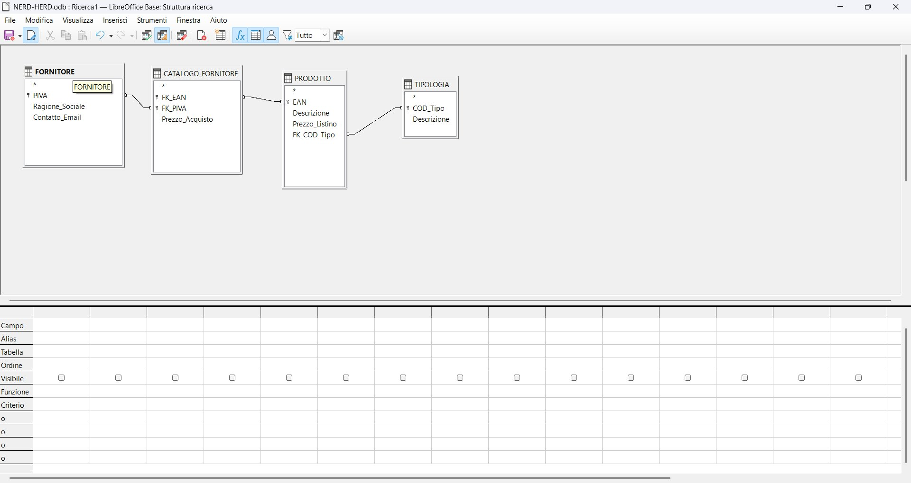
Le righe della griglia — a cosa servono
| Riga | Cosa inserire | Esempio |
|---|---|---|
| Campo | Il nome del campo da includere nella query | Ragione_Sociale |
| Alias | Un nome alternativo per l'intestazione colonna nel risultato | Fornitore |
| Tabella | La tabella di provenienza (compilato automaticamente) | FORNITORE |
| Ordine | Ordinamento: crescente o decrescente | crescente |
| Visibile | ✓ = il campo appare nel risultato; ☐ = usato solo per filtri | spunta ✓ / ☐ |
| Funzione | Funzione di aggregazione (Somma, Media, Conteggio…) | AVG |
| Criterio | Condizione di filtro (riga principale — AND implicito tra colonne) | > 10 |
| o | Condizione alternativa — OR con la riga Criterio | 'CASA' |
Come aggiungere un campo alla griglia
La prima query — selezione semplice
Obiettivo: Creare un catalogo fornitori con Ragione_Sociale, Descrizione (tipologia), Descrizione (prodotto) e Prezzo_Acquisto.
Q_CatalogoFornitori.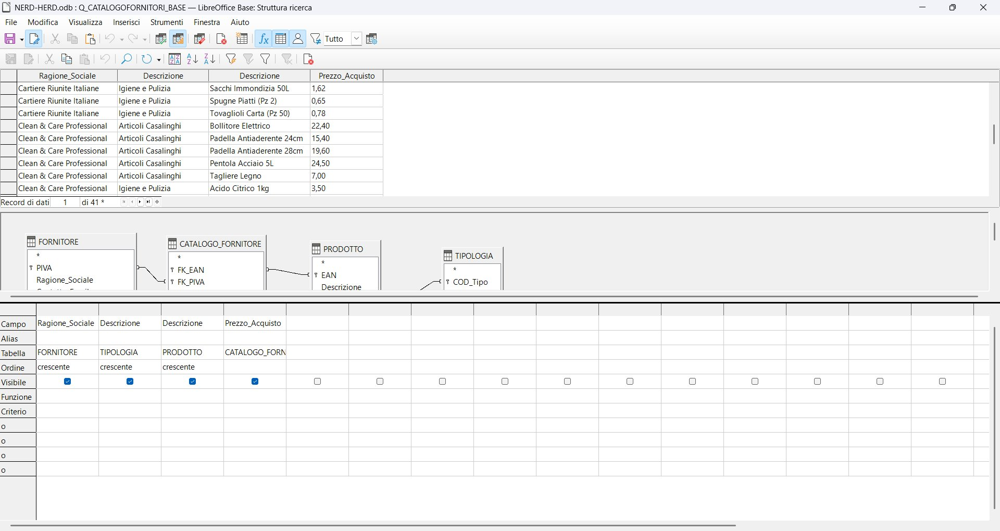
Ordinamenti — singoli e multipli
Per ordinare i risultati, si usa la riga Ordine nella griglia. Puoi scegliere crescente (A→Z, 0→9) o decrescente (Z→A, 9→0).
Ordinamento singolo
Clicca sulla cella della riga Ordine sotto il campo che vuoi ordinare → apparirà un menu a tendina con le opzioni.
| Ragione_Sociale | Descrizione | Prezzo_Acquisto | |
|---|---|---|---|
| Campo | Ragione_Sociale | Descrizione | Prezzo_Acquisto |
| Alias | |||
| Tabella | FORNITORE | PRODOTTO | CATALOGO_FORNITORE |
| Ordine | crescente | ||
| Visibile | |||
| Criterio |
Ordinamento multiplo
Puoi ordinare per più campi contemporaneamente: l'ordinamento è gerarchico — prima si ordina per il campo più a sinistra nella griglia, poi per quello successivo a parità del precedente.
| Ragione_Sociale | Descrizione | Descrizione | Prezzo_Acquisto | |
|---|---|---|---|---|
| Campo | Ragione_Sociale | Descrizione | Descrizione | Prezzo_Acquisto |
| Tabella | FORNITORE | TIPOLOGIA | PRODOTTO | CATALOGO_FORNITORE |
| Ordine | crescente | crescente | crescente | |
| Visibile | ||||
| Criterio |
↑ Prima si raggruppano per fornitore, poi per tipologia, poi per prodotto — tutto in ordine alfabetico crescente.
Filtri statici
Un filtro statico è una condizione fissa scritta direttamente nella griglia. Il valore non cambia mai — ogni volta che esegui la query, il risultato è filtrato sempre allo stesso modo.
Il filtro va inserito nella riga Criterio della colonna del campo su cui vuoi filtrare.
Operatori disponibili
| Operatore | Significato | Esempio |
|---|---|---|
= oppure niente | Uguale a | 'Articoli Casalinghi' oppure Articoli Casalinghi |
<> | Diverso da | <> 'CASA' |
> < | Maggiore / Minore | > 10 |
>= <= | Maggiore o uguale / Minore o uguale | <= 5.00 |
COME (o LIKE) | Contiene (usa % come jolly) | COME 'Articoli%' |
'CASA'. I numeri si scrivono senza apici: 10. LibreOffice spesso aggiunge gli apici da solo per il testo.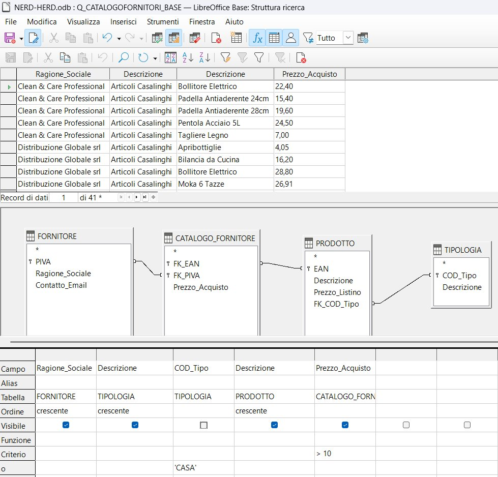
> 10 su Prezzo_Acquisto (riga Criterio) e 'CASA' su COD_Tipo (riga «o»)Esempio pratico
Query: prodotti con prezzo di acquisto maggiore di 10 euro.
| Ragione_Sociale | Descrizione | Prezzo_Acquisto | |
|---|---|---|---|
| Campo | Ragione_Sociale | Descrizione | Prezzo_Acquisto |
| Tabella | FORNITORE | PRODOTTO | CATALOGO_FORNITORE |
| Ordine | crescente | ||
| Visibile | |||
| Criterio | > 10 | ||
| o |
Il carattere jolly % (con COME)
L'operatore COME (in inglese LIKE) permette di cercare testi che assomigliano a un modello, usando % come carattere jolly — cioè "qualsiasi cosa, di qualsiasi lunghezza".
| Criterio | Significato | Trova, ad esempio |
|---|---|---|
COME 'Art%' | Inizia per "Art" | Articoli Casalinghi, Articoli da Regalo |
COME '%Pulizia' | Finisce per "Pulizia" | Igiene e Pulizia |
COME '%Casa%' | Contiene "Casa" in qualsiasi posizione | Articoli Casalinghi |
COME 'B_llitore' | _ = esattamente un carattere | Bollitore |
% sostituisce zero o più caratteri qualsiasi. Il trattino basso _ sostituisce esattamente un carattere. Nella pratica userai quasi sempre %.Filtri dinamici (con parametri)
Un filtro dinamico chiede all'utente di inserire il valore ogni volta che la query viene eseguita. È molto utile quando vuoi usare la stessa query per ricerche diverse.
Per creare un filtro dinamico, al posto del valore fisso scrivi ? oppure :NOME_PARAMETRO.
Usa ? quando hai un solo parametro per campo. All'esecuzione, appare un dialog che chiede il valore.
| Ragione_Sociale | Descrizione (TIPOLOGIA) | Descrizione (PRODOTTO) | Prezzo_Acquisto | |
|---|---|---|---|---|
| Campo | Ragione_Sociale | Descrizione | Descrizione | Prezzo_Acquisto |
| Tabella | FORNITORE | TIPOLOGIA | PRODOTTO | CATALOGO_FORNITORE |
| Ordine | crescente | crescente | crescente | |
| Visibile | ||||
| Criterio | ? | > ? |
Il dialog apparirà due volte: prima per la Descrizione, poi per il Prezzo.
Usa :NOME quando vuoi dare nomi chiari ai parametri, o usare lo stesso valore in più punti. I nomi appaiono nel dialog di inserimento.
| Ragione_Sociale | Descrizione | Descrizione | Prezzo_Acquisto | |
|---|---|---|---|---|
| Campo | Ragione_Sociale | Descrizione | Descrizione | Prezzo_Acquisto |
| Tabella | FORNITORE | TIPOLOGIA | PRODOTTO | CATALOGO_FORNITORE |
| Ordine | crescente | crescente | crescente | |
| Visibile | ||||
| Criterio | :TIPO_PRODOTTO | > :PMIN E < :PMAX |
Il dialog "Specifica parametro"
Quando esegui una query con parametri, LibreOffice mostra questo dialog per ogni parametro:
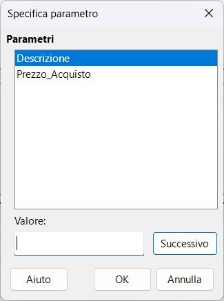
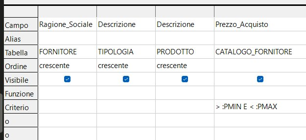
> :PMIN E < :PMAX su Prezzo_Acquisto> :PMIN E < :PMAX nella stessa cella Criterio. La parola E (in italiano) unisce le due condizioni sulla stessa colonna.COME con parametro dinamico — ricerca per parola chiave
Combinando COME con un parametro ottieni una ricerca flessibile: l'utente digita una parola e la query trova tutti i record che la contengono, senza sapere in anticipo cosa cercherà.
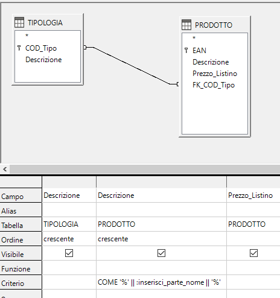
COME '%' || :inserisci_parte_nome || '%' nella riga Criterio: il % prima e dopo garantisce che la parola venga trovata ovunque nella stringa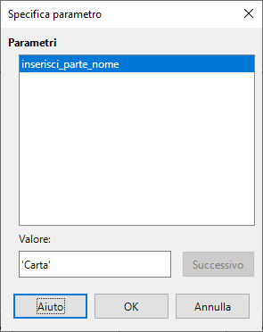
Carta come valore del parametro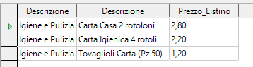
|| concatena testo. '%' || :inserisci_parte_nome || '%' costruisce il pattern %Carta% in modo dinamico — il valore inserito dall'utente viene "avvolto" dai due % automaticamente.Filtri in AND e in OR
// La regola fondamentale:
- AND → condizioni sulla stessa riga (riga Criterio, colonne diverse)
- OR → condizioni su righe diverse (riga Criterio e righe «o»)
Scenario: voglio i prodotti di tipologia "Articoli Casalinghi" CON prezzo tra 5 e 25 euro. Entrambe le condizioni devono essere vere contemporaneamente → AND.
| Ragione_Sociale | Descrizione (TIPOLOGIA) | Descrizione (PRODOTTO) | Prezzo_Acquisto | |
|---|---|---|---|---|
| Campo | Ragione_Sociale | Descrizione | Descrizione | Prezzo_Acquisto |
| Tabella | FORNITORE | TIPOLOGIA | PRODOTTO | CATALOGO_FORNITORE |
| Ordine | crescente | crescente | crescente | |
| Visibile | ||||
| Criterio | :TIPO_PRODOTTO | > :PMIN E < :PMAX | ||
| o |
Le condizioni sono sulla stessa riga Criterio → si leggono come AND: tipologia = X E prezzo tra min e max.
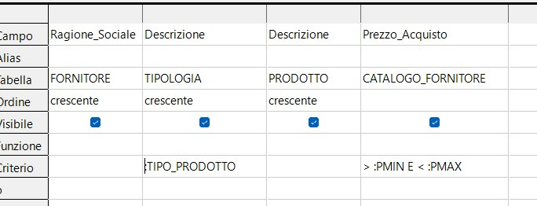
Scenario: voglio i prodotti di tipologia "Articoli Casalinghi" OPPURE quelli con prezzo maggiore di 10. Basta che una delle condizioni sia vera → OR.
| Ragione_Sociale | COD_Tipo | Descrizione (PRODOTTO) | Prezzo_Acquisto | |
|---|---|---|---|---|
| Campo | Ragione_Sociale | COD_Tipo | Descrizione | Prezzo_Acquisto |
| Tabella | FORNITORE | TIPOLOGIA | PRODOTTO | CATALOGO_FORNITORE |
| Ordine | crescente | crescente | ||
| Visibile | ||||
| Criterio | > 10 | |||
| o | 'CASA' |
Le condizioni sono su righe diverse → si leggono come OR: prezzo > 10 OPPURE COD_Tipo = 'CASA'.
> 10 (riga Criterio) e 'CASA' (riga «o») — sono in OR tra loroScenario avanzato: voglio i prodotti della categoria 'CASA' con prezzo tra PMIN e PMAX, OPPURE i prodotti di qualsiasi altra categoria con prezzo tra PMIN e PMAX.
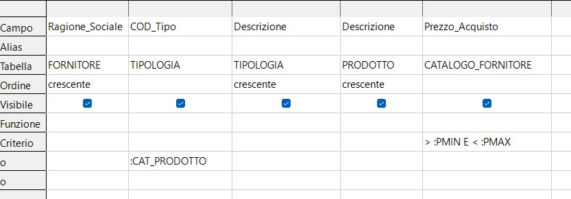
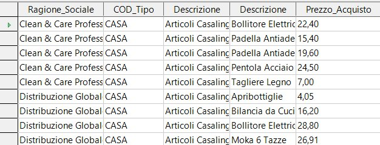
Visibile e Non visibile
La casella Visibile controlla se un campo appare nelle colonne del risultato. Un campo può essere presente nella griglia (e usato per filtrare) senza essere mostrato nel risultato.
// Quando si usa "non visibile"?
- Quando vuoi filtrare per un campo ma non vuoi mostrarlo nel risultato (es. filtri per COD_Tipo ma mostri solo la Descrizione)
- Quando vuoi ordinare per un campo senza mostrarlo
Esempio: filtrare per COD_Tipo senza mostrarlo
| Ragione_Sociale | COD_Tipo ⚠ | Descrizione (TIPOLOGIA) | Descrizione (PRODOTTO) | Prezzo_Acquisto | |
|---|---|---|---|---|---|
| Campo | Ragione_Sociale | COD_Tipo | Descrizione | Descrizione | Prezzo_Acquisto |
| Tabella | FORNITORE | TIPOLOGIA | TIPOLOGIA | PRODOTTO | CATALOGO_FORNITORE |
| Ordine | crescente | crescente | crescente | ||
| Visibile | |||||
| Criterio | > :PMIN E < :PMAX | ||||
| o | :CAT_PRODOTTO |
⚠ COD_Tipo: la spunta Visibile è vuota → non apparirà nel risultato, ma il filtro funziona lo stesso.
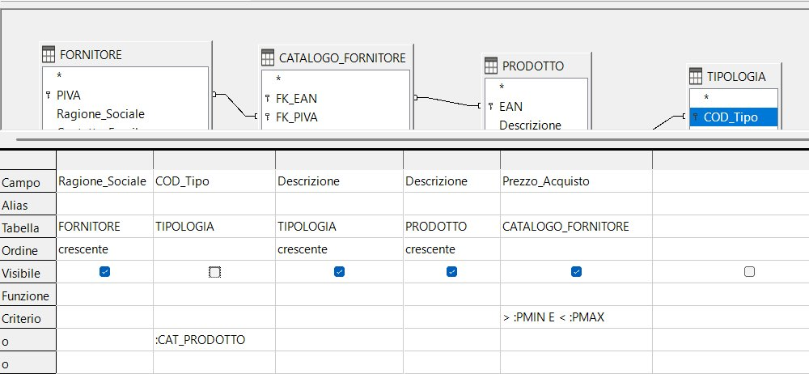
:CAT_PRODOTTO è attivo nella riga «o»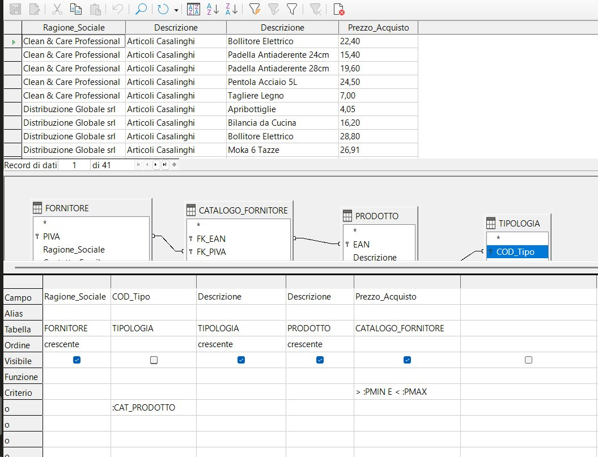
Funzioni di aggregazione
Le funzioni di aggregazione permettono di fare calcoli su gruppi di record: contare quanti prodotti ha ogni fornitore, calcolare il prezzo medio per categoria, trovare il massimo, ecc.
Per usarle, occorre attivare la riga Funzione nella griglia (di solito appare già; se non fosse visibile, vai su Visualizza → Funzioni).
Le funzioni disponibili
| Funzione | Significato | Usata su |
|---|---|---|
Gruppo | Raggruppa i record con lo stesso valore | Campi testuali (nome, categoria…) |
Conteggio | Conta quanti record ci sono nel gruppo | Qualsiasi campo |
AVG | Calcola la media dei valori | Campi numerici |
Somma | Calcola la somma dei valori | Campi numerici |
Max | Trova il valore massimo | Campi numerici o testo |
Min | Trova il valore minimo | Campi numerici o testo |
Esempio: quanti prodotti per fornitore e tipologia + prezzo medio
Obiettivo: per ogni fornitore e ogni tipologia, sapere quanti prodotti ci sono e qual è il prezzo medio di acquisto.
| Ragione_Sociale | Descrizione (TIPOLOGIA) | Descrizione (PRODOTTO) | Prezzo_Acquisto | |
|---|---|---|---|---|
| Campo | Ragione_Sociale | Descrizione | Descrizione | Prezzo_Acquisto |
| Alias | NUM PRODOTTI | PR. MEDIO | ||
| Tabella | FORNITORE | TIPOLOGIA | PRODOTTO | CATALOGO_FORNITORE |
| Ordine | crescente | crescente | ||
| Visibile | ||||
| Funzione | Gruppo | Gruppo | Conteggio | AVG |
| Criterio |
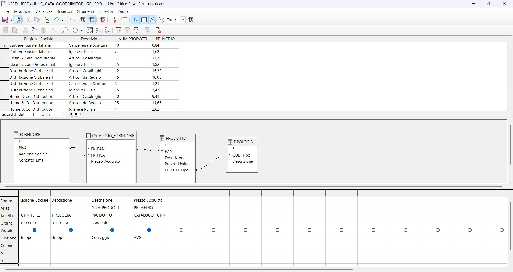
L'Alias — rinominare le colonne nel risultato
Quando usi funzioni di aggregazione, la colonna nel risultato avrebbe un nome tecnico brutto (es. «Conteggio di Descrizione»). Con l'Alias puoi darle un nome chiaro.
NUM PRODOTTI.Query su più tabelle (JOIN)
Quando aggiungi più tabelle collegate al Query Designer, LibreOffice traccia automaticamente le linee di join tra di esse (le stesse linee della struttura relazioni). Non devi fare nulla di speciale: basta che le tabelle siano effettivamente collegate nel database.
Come aggiungere le tabelle giuste
Riepilogo visivo — cosa controllare sempre
| Cosa controllare | ✅ Corretto | ❌ Sbagliato |
|---|---|---|
| Linee di join | Tutte le tabelle hanno almeno una linea che le collega | Una tabella "flotta" da sola |
| Riga Tabella | Ogni campo mostra la tabella corretta | Campo da tabella sbagliata |
| Numero record | Plausibile rispetto ai dati | Numero altissimo e inaspettato |
| Funzione con aggregazione | Ogni colonna ha Gruppo o una funzione | Mix di colonne con e senza funzione |
Q_ seguito da una descrizione: Q_CatalogoFornitori, Q_VenditeMensili. Così nella lista delle ricerche capisci subito a cosa serve ogni query.Tipi di join — modificare le relazioni dall'interfaccia
Di default LibreOffice Base usa un INNER JOIN (Relazione interna): vengono restituiti solo i record che hanno una corrispondenza in entrambe le tabelle. Se vuoi includere anche i record senza corrispondenza — ad esempio scontrini di clienti non registrati — devi modificare il tipo di join direttamente sulla linea grafica.
Modificare il tipo di join dalla linea grafica
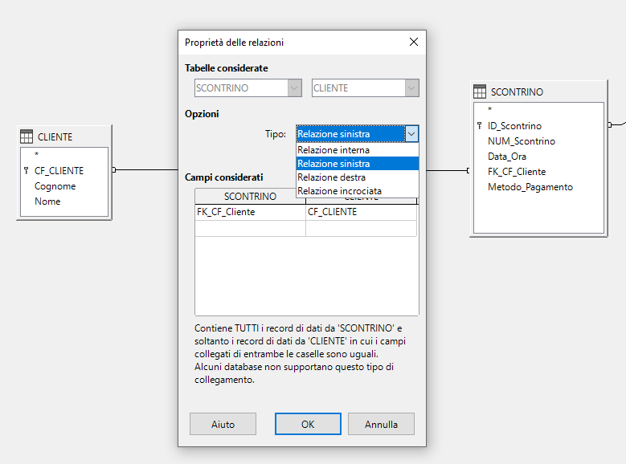
| Tipo (LibreOffice) | Equivalente SQL | Restituisce | Quando usarlo |
|---|---|---|---|
| Relazione interna | INNER JOIN | Solo le righe con corrispondenza in entrambe le tabelle | Caso standard — vuoi solo dati completi |
| Relazione sinistra | LEFT JOIN | Tutte le righe della tabella di sinistra + corrispondenze a destra (NULL se mancano) | Vuoi tutti i record della tabella principale, anche senza corrispondenza |
| Relazione destra | RIGHT JOIN | Tutte le righe della tabella di destra + corrispondenze a sinistra (NULL se mancano) | Speculare al LEFT — la tabella "completa" è quella di destra |
| Relazione incrociata | FULL OUTER JOIN | Tutte le righe di entrambe le tabelle, con NULL dove manca la corrispondenza | Raro; alcuni database non lo supportano (nota nel dialog) |
Esempio pratico — RIGHT JOIN tra SCONTRINO e CLIENTE
Vogliamo il catalogo completo delle vendite: per ogni riga di DETTAGLIO_VENDITE vogliamo vedere il prodotto, la quantità, il prezzo e — se disponibile — il codice fiscale del cliente. Gli scontrini anonimi (senza CF_Cliente) devono comparire ugualmente.
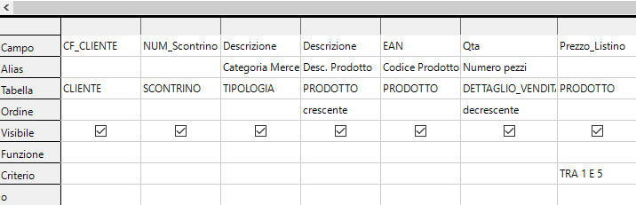
TRA 1 E 5 sul campo Prezzo_Listino.// Configurazione della query nell'esempio:
- Join CLIENTE ↔ SCONTRINO: impostato a Relazione destra (RIGHT JOIN) — tutti gli scontrini compaiono, anche quelli senza cliente registrato
- Alias colonne:
Descrizionedella TIPOLOGIA → «Categoria Merceologica»;Descrizionedi PRODOTTO → «Desc. Prodotto»;EAN→ «Codice Prodotto»;Qta→ «Numero pezzi» - Ordinamenti: Categoria Merceologica crescente · Numero pezzi decrescente
- Criterio:
TRA 1 E 5su Prezzo_Listino — solo prodotti con prezzo compreso tra 1 € e 5 €
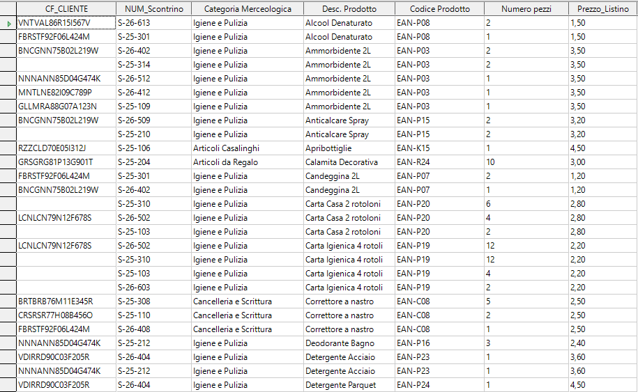
Relazioni in cascata
Le relazioni tra tabelle non servono solo a collegare i dati nelle query — definiscono anche cosa succede quando si modifica o si cancella un record padre. Questo si gestisce dalla finestra Struttura relazioni, facendo doppio clic sulla linea di join tra due tabelle.
Aprire il dialog della relazione
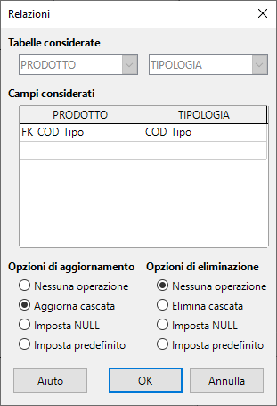
Le opzioni disponibili
| Opzione | Cosa succede al record figlio quando il padre cambia |
|---|---|
| Nessuna operazione | Non succede nulla — ma se il padre viene modificato/cancellato, il database può bloccare l'operazione per mantenere l'integrità |
| Aggiorna/Elimina cascata | La modifica o cancellazione si propaga automaticamente a tutti i record figli collegati |
| Imposta NULL | Il campo chiave esterna nei record figli viene impostato a NULL (campo vuoto) |
| Imposta predefinito | Il campo chiave esterna viene impostato al valore predefinito della colonna |
Esempio pratico — Aggiorna cascata
Scenario: nella tabella TIPOLOGIA cambiamo il codice CASA in CASA2. Con Aggiorna cascata attivo, tutti i prodotti che avevano FK_COD_Tipo = 'CASA' vengono aggiornati automaticamente a 'CASA2' — senza dover toccare manualmente la tabella PRODOTTO.
// Senza cascata vs Con cascata:
- Senza cascata: modificare o cancellare un record padre con figli collegati → errore di integrità referenziale, operazione bloccata
- Con Aggiorna cascata: modifichi il padre → i figli si aggiornano automaticamente
- Con Elimina cascata: cancelli il padre → tutti i figli vengono cancellati automaticamente
Modificare i dati direttamente da tabella
Per modificare o cancellare record senza SQL, LibreOffice Base permette di lavorare direttamente nella vista tabella: